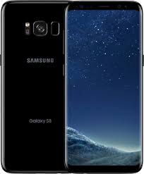

Galaxy S8 özellikleri
Ekran: 5.8 inç, 1440 x 2960 piksel, Super AMOLED, Gorilla Glass 5
Ýþlemci: Exynos 8895 ( 4 x 2.5 GHz Exynos M2 + 4 x 1.7 GHz Cortex-A53 )
Grafik Birimi: Mali G71
RAM: 4 GB RAM
Depolama: 64 GB GB depolama alaný, microSD destekli
Arka Kamera: 12 Megapiksel f/1.7, 26mm lens, OIS
Ön Kamera: 8 Megapiksel f/1.7, 22mm lens
Pil: 3000 mAh
Ýþletim Sistemi: Android 7.0 Nougat, Yenilenmiþ TouchWiz
Baðlantý: 802.11 a, b, g, n, ac, Bluetooth 5, NFC, USB Type-C
Boyut ve aðýrlýk: 148.9 x 68.1 x 8 mm – 155 gram
Gelin, þimdi Samsung Galaxy S8’in teknik özelliklerine ve tasarýmýna detaylý bir þekilde bakalým.
10 nm yeni iþlemci: Exynos 8895
Telefon gücünü Samsung’un 10 nm FinFET fabrikasyon süreci ile üretilen yeni Exynos 8895 iþlemcisinden alýyor.